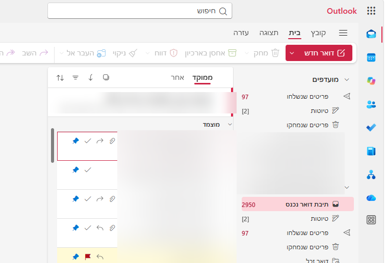
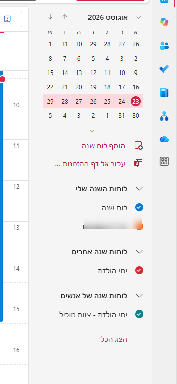
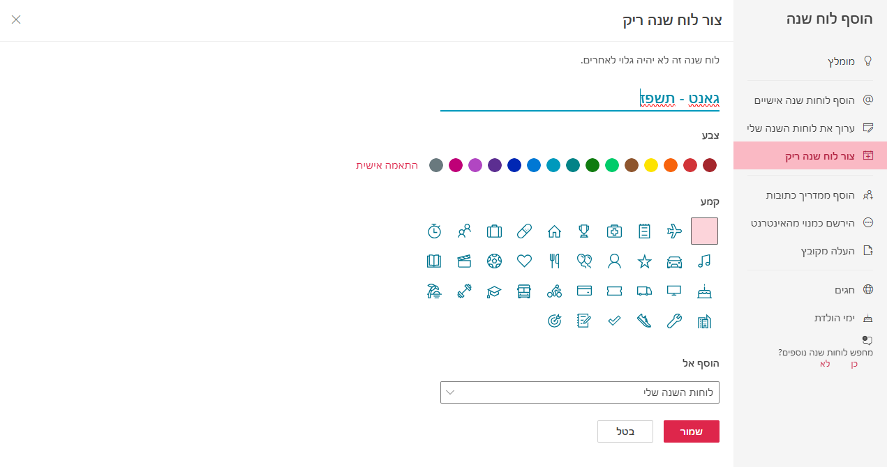
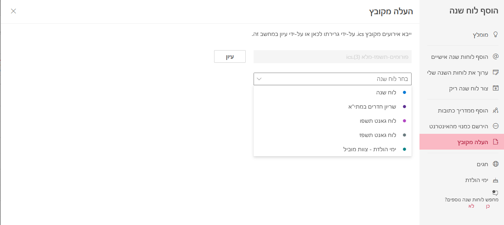
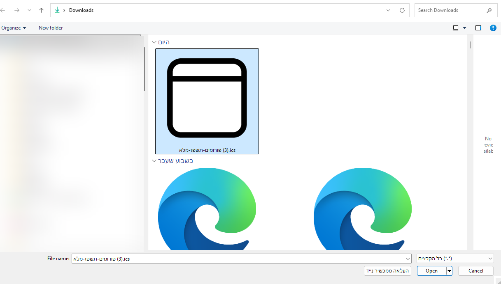
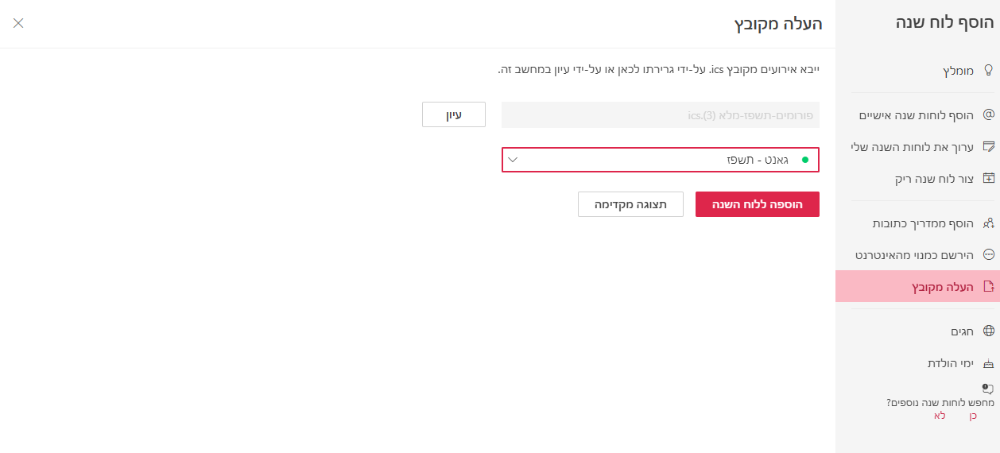
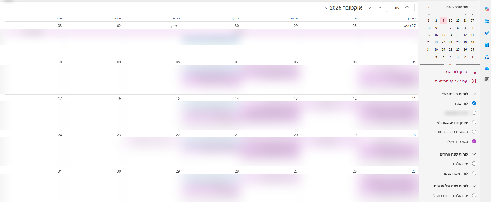

מדריך הפעלה
שמונה שלבים, מהרגע שפותחים את Outlook ועד שהאירועים מופיעים ביומן — עם סימון מדויק של כל מקום שצריך ללחוץ עליו.
.ics שמור על המחשב — בדרך כלל בתיקיית Downloads.מעבר מתיבת הדואר אל אפליקציית היומן

החלונית שממנה עושים את כל השאר

ארבע פעולות במסך אחד
למה לא ישר ליומן הראשי? לוח נפרד אפשר להסתיר בלחיצה, לצבוע בצבע משלו, ולמחוק כולו בבת אחת אם התחרטת. ביומן הראשי האירועים מתערבבים ואי אפשר להפריד אותם בחזרה.

חוזרים לאותה חלונית, לשורה אחרת בתפריט

חלון בחירת הקבצים של Windows
.ics ולחצי עליו פעם אחת.

השלב שאסור לדלג עליו
⚠️ אם לא תבחרי כאן לוח — האירועים ייכנסו ליומן הראשי, ואי אפשר להפריד אותם בחזרה.
הלחיצה שמבצעת את הייבוא

איך יודעים שהאירועים באמת נכנסו

שלוש התקלות שחוזרות הכי הרבה — וכולן הפיכות.
אם הם נכנסו ללוח נפרד — לחצי ימני על שם הלוח ברשימה ובחרי "הסר". הכול נמחק בבת אחת, ואפשר להתחיל מחדש משלב 4.
בדקי שהעיגול ליד שם הלוח מסומן — לוח לא מסומן פשוט מוסתר. אחר כך עברי לחודש שבו האירועים אמורים להיות.
סימן שהקובץ הועלה פעמיים. הסירי את הלוח כולו וחזרי על שלבים 3–7 פעם אחת.
מדריך פנימי · העלאת קובץ ICS ליומן Outlook